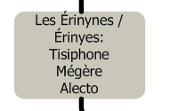
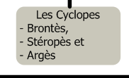
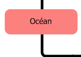

 des mômes de Eris.")
.")


 dans le Tartare, ils en sont sauvés par Cronos. Ils l'aident ensuite à renverser Ouranos. Cette fois-ci, Cronos les enferme dans le Tartare Ils sont délivrés cette fois par Zeus, qu'ils assistent pour foutre une branlée aux Titans. Ces derniers, une fois vaincus, sont précipités dans le Tartare, dont les Hécatonchires deviennent les gardiens. En gros, des costauds bien énervés à éviter.")


, déesse de la germination, de l'amour, des plaisirs et de la beauté. Elle est mariée à Héphaïstos, mais elle est assez chaude et se tape Arès, entre autres selon les versions. Hélios la grille et la balance à Héphaïstos qui s'empresse de les afficher en train de baiser devant tout l'Olympe, dont Zeus. Gros coup de pression, et donc malédiction en série, condamnant sa descendance comme par exemple Phêdre ou Ariane. Aphrodite est aussi à l'origine d'un joli mot, la callipygie, exprimant le fait d'avoir un beau cul!")


 gratos.")


: Elles sont au nombre de trois: Aéglé, érythie et Hespérie. Ce sont des Nymphes, gardiennes des pommes d'or, aidées par un Dragon, Ladon qui se fait buter par Héraclès, et finit dans les étoiles pour service rendu, par Héra (constellation du Dragon).")
.")


.")


, elle restera vierge. Il semble qu'elle était plus intéressée par les nanas que par les mecs, Cf. sa relation avec Callisto.")
, que par un mortel (Diomède). Sinon, quand il va se battre, il aime bien être accompagné de sa sœur Eris, et de quelque uns de ses insupportables mômes. Il est l'un des douze grands dieux de l'Olympe, et fait même partie du trio de tête des gros boss olympiens.")


: Filles des Titans, elles s'accouplent avec les dieux pour donner naissance à diverses familles royales. Zeus les protège en les cachant dans les étoiles. Voir la constellation éponyme.")


. Il ne passe pas son temps à glander sur l'Olympe et voyage, va de fête en fête, complètement murgé les trois quarts du temps. Dieu important dans la mythologie (tu m'étonnes!!!).")